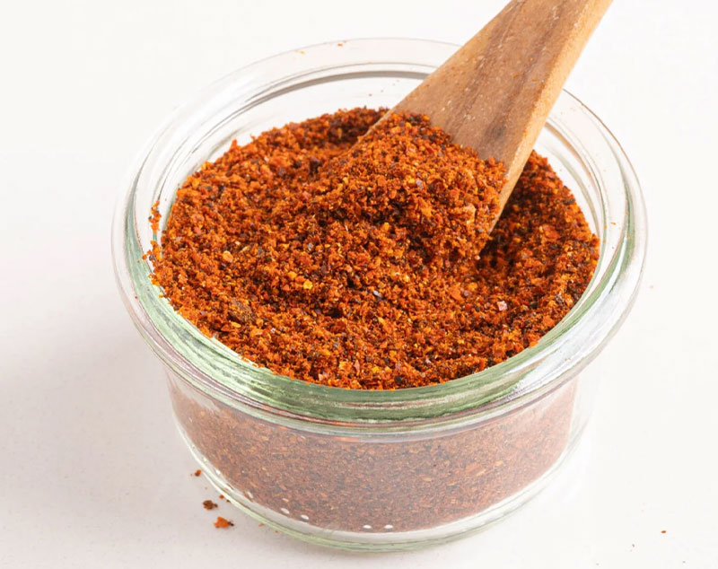

Home
Homemade Paprika (5 Minutes)

Description
Learn how to make your own Homemade Paprika using only dried red peppers. This recipe is extremely simple and comes together in 5 minutes. It’s a wonderful DIY recipe to use in spice blends, marinades, and so much more.
Ingredients
- 2 cups dried peppers (can be a blend of capsium, bell, aleppo, etc.)
Instructions
- Grind dried peppers. Remove seeds and stems from the peppers, roughly chop the peppers if they are too large to fit in your grinder.
- In a spice grinder or mortar & pestle, grind the dried peppers in batches until a ground powder is formed. Store in an air tight jar. Keeps up to 6 months.